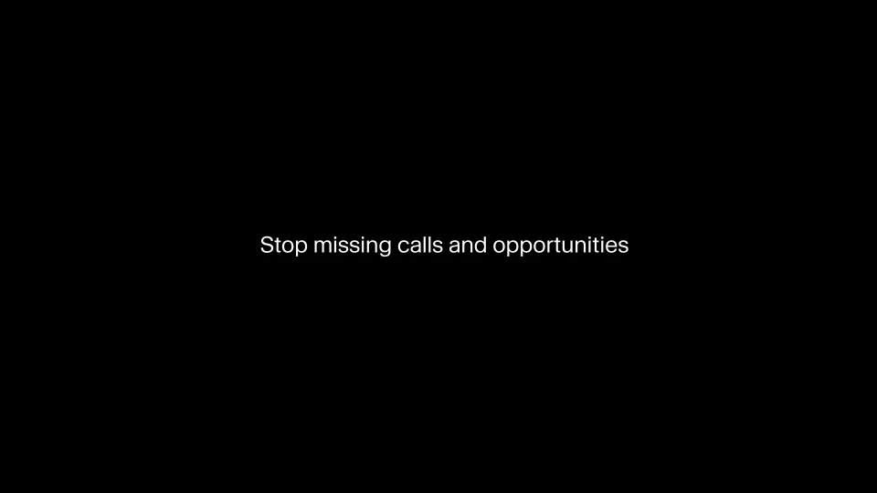
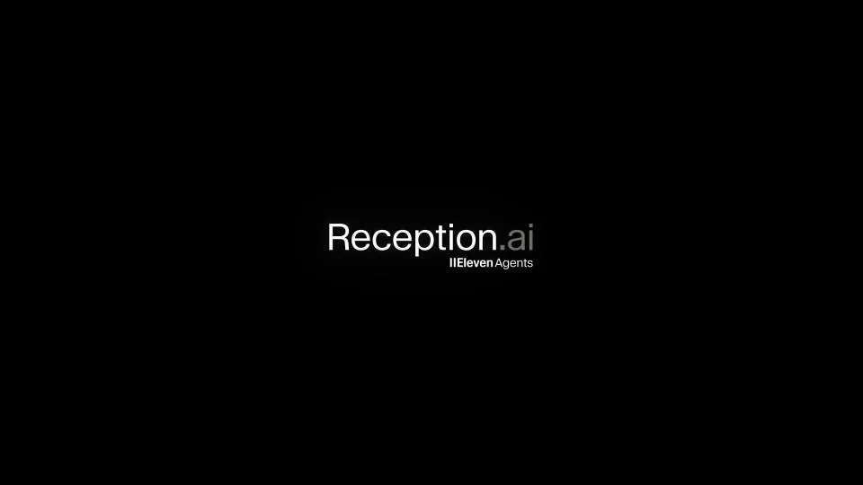

ElevenLabs / V060
Reception · 多行业电话接待
先展示多个行业都可能漏接的电话，再让一个助手接住这些需求。前半段制造响应缺口，后半段通过问答给出解决过程。
构图与编排 可播放 · 可替换内容
整体编排规则示例
查看 HTML 源码
<!doctype html><html lang="zh-CN"><meta charset="utf-8"><meta name="viewport" content="width=device-width,initial-scale=1"><title>Introducing Reception, an AI receptionist platform for small businesses, built on ElevenAgents.
Every missed call coul · sequence</title><style>html,body{margin:0;width:100%;height:100%;overflow:hidden;background:#f7f6f0}canvas{display:block;width:100%;height:100%;object-fit:contain}</style><body data-mode="sequence"><canvas width="1000" height="600"></canvas><script src="data.js"></script><script src="common.js"></script><script src="scene.js"></script><script src="bridge.js"></script></body></html>画面元素场景物件电话来电标签问题文字助手光球对话卡功能组
MOTION LANGUAGE
动作与构图
局部动作 · 构图规则
01
用物件区分场景，用来电统一问题
预约、现场工作与日常事务可以用电话和少量行业物件交代。每个场景保留一个明确的来电状态，标题逐步拼出“没人接听”的共同问题。
白色或浅色空间承托物件，电话屏幕提供深色锚点。句子使用常规无衬线字，关键词略粗，避免每个单词都做不同效果。
02
转折集中到一个助手形象
在转折句之后出现暖色光球或同样简洁的助手符号。由分散物件收束为中心主体，让后面的对话更容易跟随。
03
问答轮流出现，结果具体可读
问答轮流出现，结果具体可读规则示例
查看 HTML 源码
<!doctype html><html lang="zh-CN"><meta charset="utf-8"><meta name="viewport" content="width=device-width,initial-scale=1"><title>Introducing Reception, an AI receptionist platform for small businesses, built on ElevenAgents.
Every missed call coul · sequence</title><style>html,body{margin:0;width:100%;height:100%;overflow:hidden;background:#f7f6f0}canvas{display:block;width:100%;height:100%;object-fit:contain}</style><body data-mode="clip" data-start="16" data-end="28"><canvas width="1000" height="600"></canvas><script src="data.js"></script><script src="common.js"></script><script src="scene.js"></script><script src="bridge.js"></script></body></html>来电者先提出需求，助手再询问或回应，最后给出预约、记录或处理结果。发言方向、头像或颜色保持一致，前一条消息轻退，新消息保持清晰。
04
适合迁移到哪类服务
选择有真实响应缺口的场景，例如预约、售后或接待。替换行业物件、问题与最终结果，保留多种来电到一个服务入口的收束；结尾功能卡只总结已经展示的能力。
SEQUENCE
段落与节奏
点击段落，定位到上方编排示意。


画面参考 · 离散静帧
KEEP THE RELATIONSHIPS
制作其他主题
- 可迁移为服务响应类故事，保留多需求→响应缺口→代办→结果
- 替换行业、问题和对话内容，保持发言身份清楚
制作约束
场景物件 / 电话 / 来电标签 / 问题文字 / 助手光球 / 对话卡 / 功能组
- 前段用多个行业来电建立同一问题；中段单一光球作为解决方案
- 问答卡轮流进入，表示来电者与助手回应而非同时静态堆砌
- 结尾回扣问题并展示行动入口